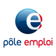

Pôle emploi
Product Owner app mobile Pôle emploi
Objectif : dynamiser les applications mobiles de Pôle emploi. De beaux défis et de nombreuses réussites : téléchargement et part de marché en constante augmentation, note des nouvelles versions > 4.